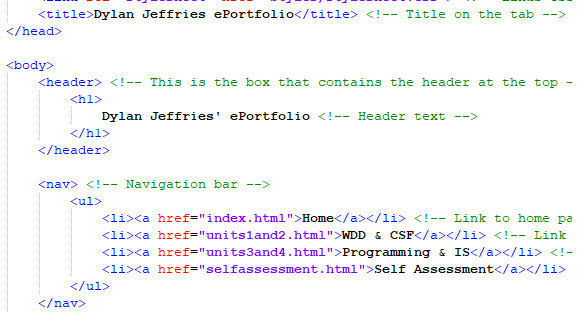

Web Design and Development

In Web Design and Development (WDD) I have learned how to create a website from scratch using HTML and CSS.
What I enjoy about WDD:
- Lots of code
- Get to build something from the ground up
- Brand new skills learned in CSS
- Learn techniques and practises that are used in professional work
My future in WDD will involve me learning about JavaScript integration and the uses of servers through
PHP and MySQL.
Computer Systems Fundamentals

In Computer Systems Fundamentals (CSF) I have learned about how a Computer is a barebones logic machine built with miniscule components.
What I enjoy about CSF:
- Put purpose to already known content
- Answered some questions I may have had before coming to University
- Working with logic
- Learning a decent bit of Maths aswell
My future in CSF will involve me learning more and more maths related to Computers. I'm not complaining, I like Maths.